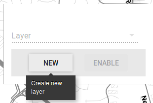
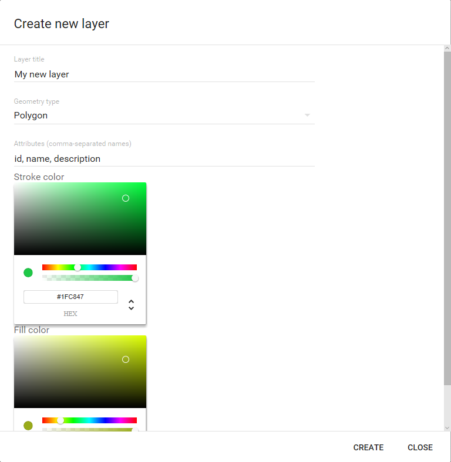
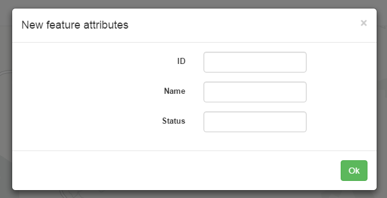

The edit component allows you to add new layers and features to the map. By clicking the Edit menu, you will see the edit toolbar.
The layer drop-down list shows the editable layers in the web app. At the beginning, it will be empty, since app layers are not editable. You have to add your own editable layers, by clicking NEW. The following dialog opens.
Enter a name for the layer and select the geometry type in the corresponding fields. You can also select the Fill and stroke colors to use when rendering features from this layer.
If you want to add attributes to the layer, enter their names in the Attributes field, separated by commas. If you leave that field empty, the layer will only have geometries, and you wont be prompted to enter attribute values when a new feature is added.
Close the dialog by clicking CREATE and the new layer will appear in the list of available editable layers.

Clicking ENABLE sets the edit tool on. In edit mode, you can enter new features by clicking on the map canvas to add points, lines or polygons, depending on the geometry type of the layer. In the case of lines and polygons, double-click to enter the last point of the geometry.
If the layer has attributes defined in its schema, you will be prompted to enter their values
Clicking DISABLE sets the edit tool off.